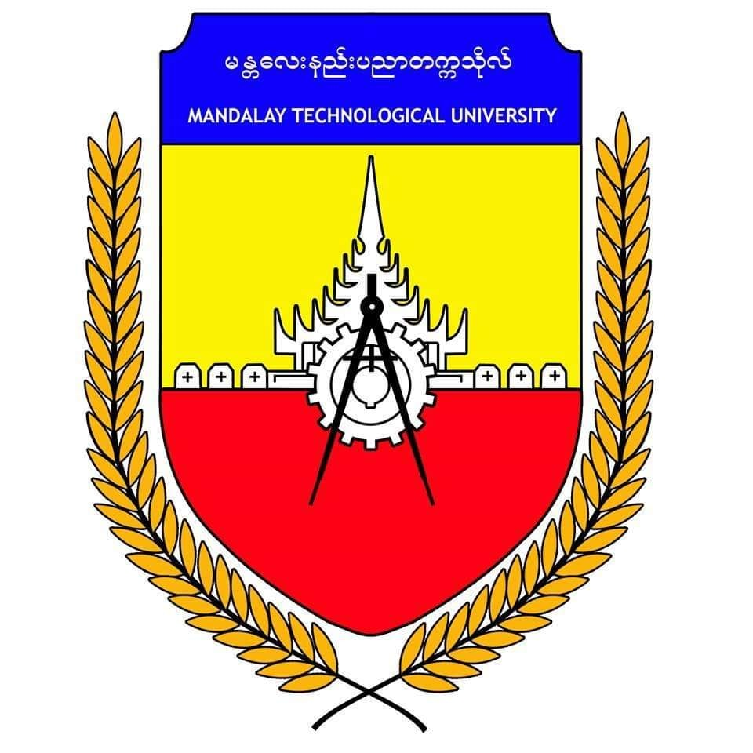

FAMILY BACKGROUND
MY BIO-DATA
My name is Ong Sike Aie.
I am 20 years old now, 11st October 1998 is my date of birth.
I have 3 siblings. I am the eldest. The middle one is brother and the youngest one is sister.
My hobbies are drawing anime characters, playing mobile games and eating some snacks which include a lot of fat !!!.
I'm attending Mandalay Technological University (MTU) now and
I passed the matriculation examination at No. (9), Basic Education High School, Mawlamyine.
MY PARENT BIO-DATA
My father name is Naing Aung Mon.
He works at MSDN, and also hires car as a small business.
His hobbies are drinking beer and play some old games, such as chess, farm fanzy,plants vs zombies, etc..
My mother name is Mi Lawi Han.
She works at Mon Women Organization (MWO) and she is also a house wife.
She worked as headmistress at Mon National High School, Endin village.
Her hobbies are planting flowers and keeping fowls and animals.
MY SIBLINGS BIO-DATA
My younger brother name is Day Rot.
He passed the matriculation examination at No. (9), B.E.H.S, Mawlamyine.
He got five extinctions in that exam with 495 marks.
He also got student of distincion
3 times in a consecutive role.
His hobbies are drawing digital arts and playing mobile games.
My younger sister name is Mya Paing Thike.
She is now attending No. (9), B.E.H.S, Mawlamyine as a grade 10 student.
Her hobbies are reading books, building hard paper toy houses, which are of her toys, and collecting toys.
